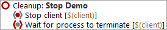

| Version 6.0.3 |
We haven't inspected the cleanup sequence, so let's have a look at it now:
|
|  | ||
|
| Figure 19.15: The Cleanup Sequence | ||
The Cleanup sequence stops the client process in a hard way and waits until it fully terminates. This is a very simple approach and shall suffice for the moment.
Action Execute the cleanup to see the CarConfigurator demo vanish.
| Last update: 9/6/2022 Copyright © 2002-2022 Quality First Software GmbH |